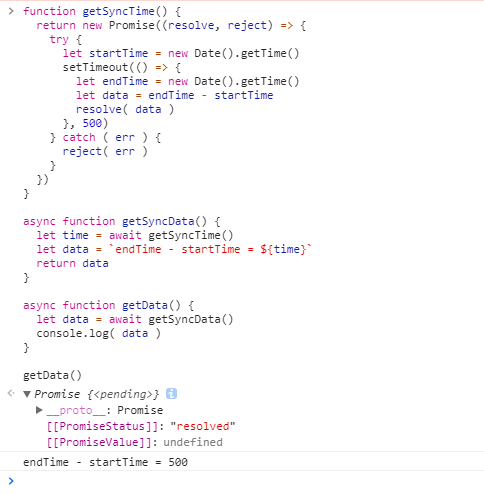

async/await使用
快速上手理解
先复制以下这段代码，在粘贴在chrome的控制台console中，按回车键执行
function getSyncTime() {
return new Promise((resolve, reject) => {
try {
let startTime = new Date().getTime()
setTimeout(() => {
let endTime = new Date().getTime()
let data = endTime - startTime
resolve( data )
}, 500)
} catch ( err ) {
reject( err )
}
})
}
async function getSyncData() {
let time = await getSyncTime()
let data = `endTime - startTime = ${time}`
return data
}
async function getData() {
let data = await getSyncData()
console.log( data )
}
getData()
在chrome的console中执行结果如下

从上述例子可以看出 async/await 的特点：
- 可以让异步逻辑用同步写法实现
- 最底层的await返回需要是Promise对象
- 可以通过多层 async function 的同步写法代替传统的callback嵌套